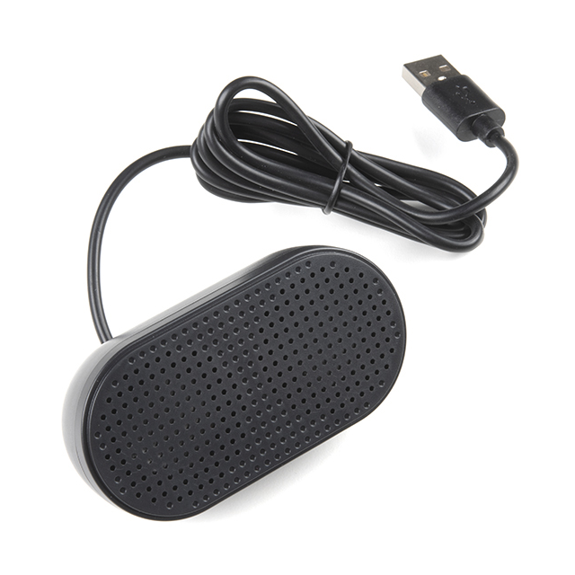
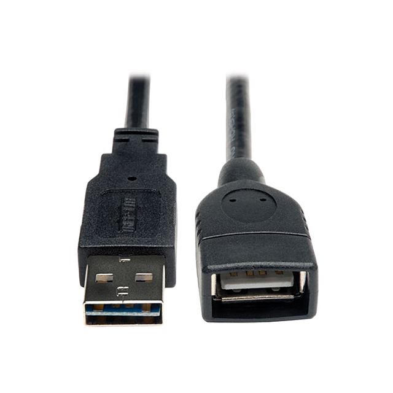

Table des matières
Présentation du Toutou 3.0
Le Toutou 3.0, développé dans le cadre du projet ELIS, est un ourson en peluche innovant, conçu pour accompagner les enfants de 3 à 8 ans dans leur développement langagier et social. Grâce à une combinaison unique de technologies de pointe (intelligence artificielle, reconnaissance et synthèse vocale), il offre une expérience d'interaction naturelle et adaptée aux besoins de chaque enfant.

Un compagnon bienveillant et stimulant
Plus qu'une simple peluche interactive, le Toutou 3.0 est un véritable compagnon pour l'enfant. Son apparence attachante et sa personnalité bienveillante, basée sur le modèle de conversation GPT-4, encouragent l'enfant à interagir spontanément avec lui. Que ce soit pour raconter des histoires, jouer à des jeux éducatifs ou simplement discuter, le Toutou 3.0 s'adapte au rythme et aux intérêts de l'enfant, tout en veillant à maintenir une conversation constructive et enrichissante.
Une aide précieuse pour les enfants en difficulté
Le Toutou 3.0 est particulièrement bénéfique pour les enfants rencontrant des difficultés langagières, comme les troubles de l'articulation (dyslalie) ou les retards de langage. Grâce à des exercices ciblés et à une exposition régulière à un langage adapté, il aide l'enfant à progresser dans sa prononciation et à enrichir son vocabulaire. Il peut également servir de support réconfortant pour les enfants victimes de traumatismes, en leur offrant une présence rassurante et à l'écoute.
Favoriser le développement global de l'enfant
Au-delà des compétences langagières, le Toutou 3.0 contribue au développement global de l'enfant. Les interactions qu'il propose favorisent :
- üó£Ô∏è Les comp√©tences sociales, √† travers des jeux de r√¥le et des mises en situation
- üé® La cr√©ativit√©, en encourageant l'enfant √† inventer des histoires et √† exprimer ses id√©es
- ü߆ Les capacit√©s cognitives, avec des devinettes, des √©nigmes et des jeux de logique adapt√©s √† son √¢ge
- üåà L'intelligence √©motionnelle, en aidant l'enfant √† identifier et √† exprimer ses √©motions

Une technologie de pointe au service de l'enfant
Le Toutou 3.0 intègre les dernières avancées en matière d'intelligence artificielle et de traitement du langage naturel, tout en restant simple et intuitif d'utilisation. Son fonctionnement repose sur :
- üéôÔ∏è Un microphone pour capter la voix de l'enfant
- üñ•Ô∏è Un Raspberry Pi pour le traitement des donn√©es
- ü߆ Le mod√®le de langage GPT-4 pour analyser les demandes de l'enfant et g√©n√©rer des r√©ponses adapt√©es
- üîä Un haut-parleur pour restituer les r√©ponses du Toutou 3.0
Toutes ces technologies sont intégrées de manière transparente dans la peluche, offrant à l'enfant une expérience d'interaction fluide et naturelle.

Avec le Toutou 3.0, Attis et Vincent, les deux étudiants de secondaire 2 à l'origine du projet ELIS, souhaitent mettre la technologie au service du bien-être et de l'épanouissement des enfants. Une ambition à la fois simple et révolutionnaire, qui témoigne de leur engagement à rendre le monde meilleur, un enfant à la fois.
Fonctionnement technique
Le Toutou 3.0 est un concentré de technologies innovantes, intégrées de manière transparente pour offrir une expérience d'interaction fluide et naturelle. Son fonctionnement repose sur une boucle d'interaction continue entre l'enfant et le Toutou, rendue possible par plusieurs composants clés :
Matériel
Le cœur du Toutou 3.0 est un Raspberry Pi, un micro-ordinateur abordable et polyvalent, parfaitement adapté aux projets éducatifs et créatifs. Nous avons choisi le modèle 4A pour sa puissance de calcul et sa compatibilité avec de nombreux périphériques, tout en gardant un form factor compact (de la taille d'une carte de crédit).
Les composants suivants sont connectés au Raspberry Pi via USB :
- üéôÔ∏è Un microphone pour capter la voix de l'enfant
- üîä Un haut-parleur pour restituer les r√©ponses du Toutou 3.0
Nous avons sélectionné ces composants pour leur compatibilité avec le Raspberry Pi et leur facilité d'intégration. Voici un tableau récapitulatif des éléments utilisés :
| Image | Composant | Référence | Prix unitaire |
|---|---|---|---|
| Raspberry Pi 4 B 8GB | 2648-SC0195(9)-ND | 109,89 $ | |
| MicroSD Card 32GB Sandisk | 2648-SC0251K-ND | 12,40 $ | |
| Heat Sink Kit for Raspberry Pi 4 | 1597-110991327-ND | 1,55 $ | |
| Case ABS White 3.622" L x 2.756" W | 1597-114992086-ND | 5,65 $ | |
| HDMI Cable Type A Male to Micro HDMI Type D Male 1m | 2648-SC0546-ND | 7,81 $ | |
| Mini USB Microphone Compatible with Raspberry Pi | 1597-114992002-ND | 7,65 $ | |
|  | Speaker 4 Ohm 4W Top Port | 1568-COM-18343-ND | 17,10 $ |
|  | USB 2.0 Cable Type A Receptacle to Type A Plug 0.5' | TL1783-ND | 8,54 $ |
 |
AC/DC Wall Mount Adapter 5.1V 15W | 2648-SC0445-ND | 11,72 $ |
 |
RASPBERRY PI CAMERA 3 | 2648-SC0872-ND | 76,78 $ |
| Raspberry Pi Camera Cable 1m | 1528-2539-ND | 5,79 $ |
Gestion thermique
Pour éviter toute surchauffe du Toutou 3.0, nous avons mis en place un système de dissipation thermique efficace :
- üå°Ô∏è Des dissipateurs thermiques pour r√©partir la chaleur g√©n√©r√©e par le Raspberry Pi
- üí® Un ventilateur pour √©vacuer l'air chaud √† travers la peluche de mani√®re homog√®ne
Grâce à ces optimisations, le Toutou 3.0 peut fonctionner de manière continue sans risque de surchauffe, offrant ainsi une expérience sûre et agréable pour l'enfant.
Connectivité
Pour communiquer avec les services d'intelligence artificielle en ligne (reconnaissance vocale, traitement du langage, synthèse vocale), le Toutou 3.0 utilise une connexion Wi-Fi intégrée au Raspberry Pi. À terme, nous envisageons d'ajouter une connectivité cellulaire (via une carte SIM) pour rendre le Toutou 3.0 encore plus autonome et nomade.
L'ensemble de ces choix techniques, mûrement réfléchis, permettent au Toutou 3.0 d'offrir une expérience d'interaction riche et fluide, tout en restant abordable et facile à prendre en main. Un concentré d'innovation au service du développement et de l'épanouissement des enfants !
Code source
Le code source du Toutou 3.0, développé en Python, est le fruit d'un travail minutieux visant à offrir une expérience d'interaction fluide et engageante pour les enfants. Il s'appuie sur plusieurs bibliothèques et services externes pour la reconnaissance vocale, le traitement du langage naturel et la synthèse vocale.
Architecture globale
Le programme principal, structuré autour d'une boucle d'interaction continue, suit les étapes suivantes :
- Écoute de la voix de l'enfant via le microphone
- Conversion de la voix en texte grâce à l'API Google Speech-to-Text (STT)
- Envoi du texte à GPT-4, un modèle de langage développé par OpenAI, pour interprétation et génération d'une réponse appropriée
- Conversion de la réponse textuelle en voix grâce à la bibliothèque Whisper d'OpenAI (Text-to-Speech, TTS)
- Lecture de la réponse vocale via le haut-parleur du Toutou 3.0
Gestion des erreurs et optimisations
Une attention particulière a été portée à la gestion des erreurs et des exceptions, afin de garantir un fonctionnement robuste et une expérience utilisateur optimale. Par exemple, le code vérifie systématiquement la validité des réponses reçues des API externes et fournit des messages d'erreur clairs en cas de problème :
try:
text = text + " " + recognizer.recognize_google(audio, language="fr-FR")
print(bcolors.SYSTEM + f" Sys: Texte reconnu: {text}" + bcolors.ENDC)
except sr.UnknownValueError:
print(bcolors.SYSTEM + " Sys: Exception: Could not understand audio" + bcolors.ENDC)
except sr.RequestError as e:
print(bcolors.SYSTEM + f" Sys: Exception: Could not request results; {e}" + bcolors.ENDC)Plusieurs optimisations ont été implémentées pour réduire la latence et améliorer la fluidité des interactions, comme le traitement parallèle des réponses de GPT-4 :
# Séparation des phrases de la réponse
split_answers = re.findall(r'[^.!?]*[.!?]', answer)
# Traitement parallèle des phrases
for answer_part in split_answers:
response = client.audio.speech.create(
model="tts-1",
voice="echo",
response_format="mp3",
input=answer_part
)
filename = os.path.join(experiment_folder, str(len(prompts)).zfill(4) + "-Elis (" + str(answer_part_index).zfill(2) + ").mp3")
response.stream_to_file(filename)
# Attente de la fin de la lecture de la phrase précédente
await task_player
# Lecture de la nouvelle phrase
task_player = asyncio.create_task(asyncio.to_thread(playsound, filename))Un projet open-source
Le code source complet du Toutou 3.0 est disponible sur GitHub, reflétant notre volonté de transparence et de collaboration :
Nous encourageons tous les développeurs intéressés à explorer notre code, à l'utiliser pour leurs propres projets et à contribuer à son amélioration. Ensemble, nous pouvons faire du Toutou 3.0 un compagnon toujours plus pertinent et enrichissant pour les enfants !
Défis et solutions
Le développement du Toutou 3.0 a été une véritable quête initiatique pour Attis et Vincent, jalonnée de défis techniques et humains. Mais c'est en affrontant ces épreuves avec créativité et détermination qu'ils ont su transformer les obstacles en opportunités d'apprentissage et d'amélioration.
Reconnaissance de la parole des enfants
L'un des premiers défis rencontrés fut la reconnaissance de la parole des enfants, souvent imprécise ou hésitante. Pour y remédier, Attis et Vincent ont travaillé sur l'optimisation des modèles de reconnaissance vocale, en les entraînant sur des échantillons de voix d'enfants et en ajustant les paramètres pour mieux gérer les variations de prononciation et les bruits de fond.
Génération de réponses adaptées
Autre défi de taille : générer des réponses adaptées au niveau de langage et de compréhension des enfants. Grâce à un travail minutieux sur les prompts et les paramètres de GPT-4, Attis et Vincent ont su créer un modèle de conversation capable de s'ajuster au vocabulaire et aux centres d'intérêt de chaque enfant, tout en maintenant une communication bienveillante et enrichissante.
Intégration des composants
Intégrer tous les composants électroniques dans un format de peluche agréable et sécurisé n'a pas été une mince affaire. Mais en travaillant main dans la main avec leurs parents, Attis et Vincent ont su concevoir un boîtier sur mesure pour accueillir le Raspberry Pi et les autres éléments, tout en préservant la douceur et l'aspect réconfortant du Toutou 3.0.
Maintien de l'engagement et du lien affectif
Pour que le Toutou 3.0 soit un véritable compagnon pour l'enfant, il fallait créer et maintenir un lien affectif fort. C'est en privilégiant des interactions naturelles et chaleureuses, basées sur l'écoute et l'empathie, qu'Attis et Vincent ont réussi à donner vie à un ami en peluche attachant et réconfortant. Chaque détail, du ton de la voix au choix des mots, a été pensé pour favoriser l'engagement de l'enfant sur le long terme.
Respect de l'éthique et des règles du concours
Tout au long du projet, Attis et Vincent ont veillé à respecter les règles d'éthique et les consignes du Défi Expo-Sciences. Ainsi, aucun test n'a été réalisé avec des enfants durant la phase de développement, conformément aux exigences du concours. Les seuls utilisateurs du Toutou 3.0 ont été Attis et Vincent eux-mêmes, qui ont su se mettre dans la peau de leur public cible pour améliorer leur prototype.
Gestion du temps et des ressources
Mener un tel projet en parallèle de leur scolarité n'a pas été facile pour Attis et Vincent. Mais en s'organisant rigoureusement et en sollicitant l'aide de leurs proches, ils ont su trouver le temps et les ressources nécessaires pour concrétiser leur vision. Chaque obstacle rencontré a été l'occasion de développer leur sens de l'initiative et leur capacité à rebondir.
Perspectives d'avenir
Si le Toutou 3.0 en est encore au stade de prototype, Attis et Vincent ont déjà en tête de nombreuses pistes d'amélioration et d'évolution. Passage à l'échelle, commercialisation, développement de nouvelles fonctionnalités... Les défis ne manquent pas pour la suite de l'aventure, mais c'est avec enthousiasme et détermination qu'ils les abordent, forts de tout ce qu'ils ont appris et accompli jusqu'ici. Et s'ils savent pouvoir compter sur le soutien de leur entourage, ils sont aussi ouverts à toute aide extérieure pour faire grandir leur projet et en démultiplier l'impact.
Évolution du projet
Le Toutou 3.0 n'est que le début d'une belle aventure. Attis et Vincent ont encore plein d'idées et d'aspirations pour faire grandir leur projet et en démultiplier l'impact. Parce qu'ils sont convaincus que la technologie peut être un formidable outil au service du bien-être et de l'épanouissement des enfants, ils voient grand pour l'avenir du Toutou 3.0.
Pistes d'amélioration
À court terme, plusieurs pistes d'amélioration sont envisagées pour enrichir l'expérience du Toutou 3.0 et en faire un compagnon toujours plus attachant et interactif :
- üé• Ajout d'une cam√©ra pour permettre une interaction visuelle et la reconnaissance des √©motions
- üì± D√©veloppement d'une application mobile compagnon pour suivre les progr√®s de l'enfant
- üé≤ Int√©gration de nouveaux sc√©narios d'interaction (jeux √©ducatifs, histoires interactives, etc.)
- üìè D√©ploiement sur des composants plus adapt√©s (Raspberry Pi Nano ou Zero, meilleurs haut-parleurs et micros, etc.)
- üîã Utilisation d'une batterie rechargeable par induction avec un tapis de charge int√©gr√©
- üëÄ Ajout d'√©crans OLED flexibles pour donner une r√©troaction visuelle (images, vid√©os g√©n√©r√©es par l'IA)
- üé® Int√©gration d'√©crans dans les yeux pour permettre un suivi du regard et un feedback lors des temps de r√©flexion
- üéôÔ∏è Am√©lioration de l'interaction vocale (activation/d√©sactivation par pression, gestion des tours de parole, etc.)
Perspectives à long terme
À plus long terme, Attis et Vincent imaginent de nombreuses évolutions possibles pour le Toutou 3.0 :
- üè≠ Passage √† l'√©chelle et commercialisation pour rendre le Toutou 3.0 accessible au plus grand nombre
- ü§ù Partenariats avec des acteurs de l'√©ducation et de la sant√© pour d√©velopper des usages sp√©cifiques (enfants hospitalis√©s, enfants en situation de handicap, etc.)
- üåç D√©clinaisons du Toutou 3.0 adapt√©es √† diff√©rentes cultures et langues pour un impact international
- üß© Cr√©ation d'un √©cosyst√®me d'applications et de contenus autour du Toutou 3.0 pour un accompagnement sur mesure de chaque enfant
Autant de pistes qui dessinent un avenir passionnant pour le Toutou 3.0, au service de l'enfance et de l'éducation.
Un projet ouvert et collaboratif
Mais pour concrétiser cette vision, Attis et Vincent savent qu'ils auront besoin de soutiens et de compétences complémentaires. C'est pourquoi ils ont choisi de faire du Toutou 3.0 un projet open-source, ouvert à la contribution de tous ceux qui partagent leurs valeurs et leur ambition.
Que vous soyez développeur, designer, éducateur, thérapeute ou simplement parent, vous pouvez participer à l'aventure du Toutou 3.0 :
- üíª En contribuant au code source sur GitHub
- üé® En proposant des am√©liorations de design ou de nouveaux contenus
- üß™ En testant le Toutou 3.0 avec vos enfants et en partageant vos retours d'exp√©rience
- üì£ En parlant du projet autour de vous et en le faisant conna√Ætre
Chaque contribution, chaque idée, chaque encouragement compte pour aider le Toutou 3.0 à grandir et à s'améliorer. Ensemble, nous pouvons en faire un véritable compagnon du quotidien pour tous les enfants, quels que soient leur origine, leur situation ou leurs difficultés.
Et vous, que pensez-vous du Toutou 3.0 ?
Nous avons hâte de connaître votre avis sur notre projet et sur ses perspectives d'évolution. N'hésitez pas à nous faire part de vos réactions, de vos suggestions, de vos encouragements ou de vos questions. C'est grâce à votre feedback que nous pourrons faire du Toutou 3.0 un projet toujours plus pertinent et impactant.
Alors, prêts à écrire avec nous les prochaines pages de l'histoire du Toutou 3.0 ? L'aventure ne fait que commencer, et elle promet d'être passionnante !